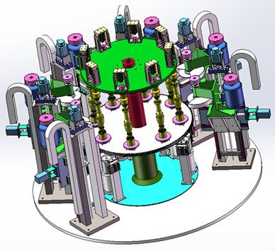
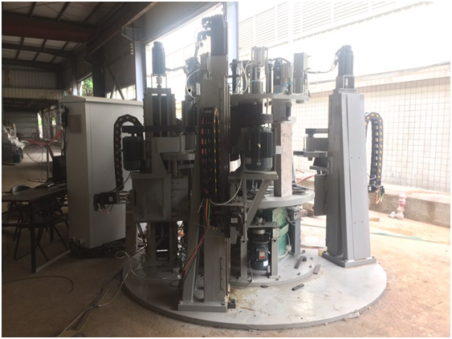

项目概述：
面向石材行业栏杆石柱磨抛自动化的需求，开展专用磨抛设备的机械结构设计、优化和多工位的集成；采用华中8型高性能数控系统，利用系统多通道多轴联动技术，实现车削、粗磨、精磨、促抛、精抛等工序的同时进行。
应用效果：
石材栏杆原材料一次装夹，多道工序同时进行，结合恒力矩磨抛控制技术，既提高了加工精度，保证了产品的一致性，也缩短了加工准备时间，提高加工效率；设备集成度高、占地少，减员增效效果明显，既降低了劳动成本，也改善了工人劳动强度和作业环境。
应用领域：
栏杆石柱加工、圆柱类石材磨抛。

栏杆柱磨抛一体化专用机床仿真图

栏杆柱磨抛一体化专用机床应用现场